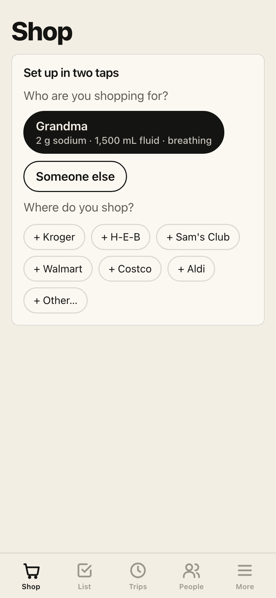
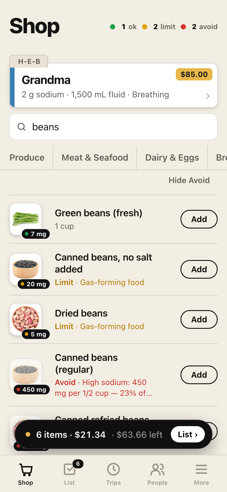
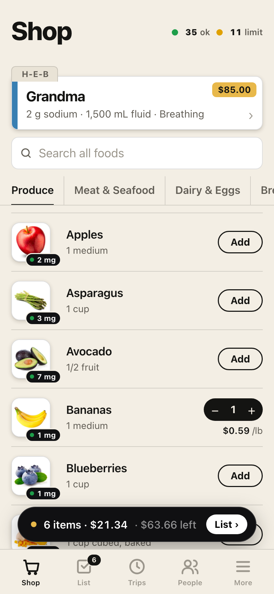
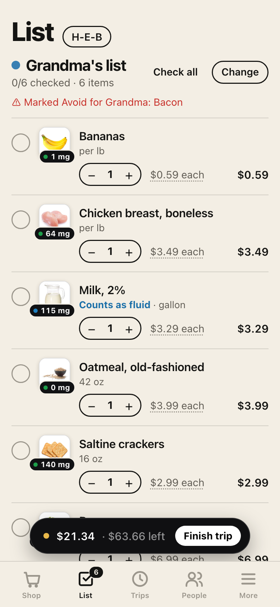
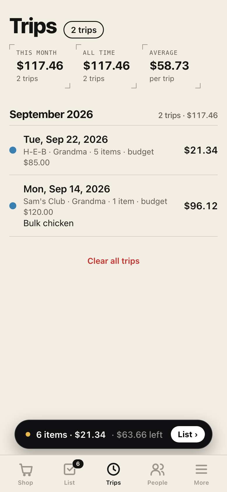

Set it up in two minutes
It's a website, not something to install — nothing to download, no account. Put it on your Home Screen so it opens like an app, then tell it who you're shopping for.
Open Tray Card Grocer ›Put it on your Home Screen
Do this once, in Safari on your iPhone.
Open the link in Safari, then tap Share
It's the square with the arrow at the bottom of the screen.
Scroll down and tap “Add to Home Screen”
It's a little way down the list, under the row of app icons.
Tap “Add”
The Tray Card icon appears next to your other apps. Tap it any time — your list is right where you left it.
Using it
The first time it opens it asks two things: who you're shopping for, and where.
Tell it who you're shopping for
Tap Grandma to start with a 2 g sodium · 1,500 mL fluid · breathing diet order, or Someone else to type your own. Then tap your store — H-E-B, Kroger, Sam's Club and the other Houston stores are already there. You can change any of this later by tapping the card at the top.

Read the dots
Every food has a dot on its picture, and the small number is the sodium in one serving.
The same food can change color with how it's packaged — fresh green beans are fine, regular canned beans are not. Tap any food name for the full nutrition numbers.

Tap Add
The black bar at the bottom keeps the running total and what's left of the budget. Search finds anything across all aisles.

In the store, use the List
Check things off as they go in the cart. If the shelf price is different, tap the price and fix it — the app remembers it for that store.

Finish the trip
Tap Finish trip, type the receipt total, and it's saved under Trips — what you bought, where, and what it cost. Shop again puts a past trip back on the list in one tap.

Your information stays on your phone
Grandma's diet order, your lists and your trips are saved inside your own phone's browser. Nobody else who opens the same link sees them — not even the person who sent it to you. If you open the link on a second phone or computer, it starts blank there.
Under More → Back up you can save a small file with everything in it. If you ever get a new phone, open the app there and use Restore from a backup.
Nutrition numbers are typical label values for a generic version of each food and standard hospital diet rules. It's a shopping aid, not medical advice — the doctor or dietitian sets the real limits.